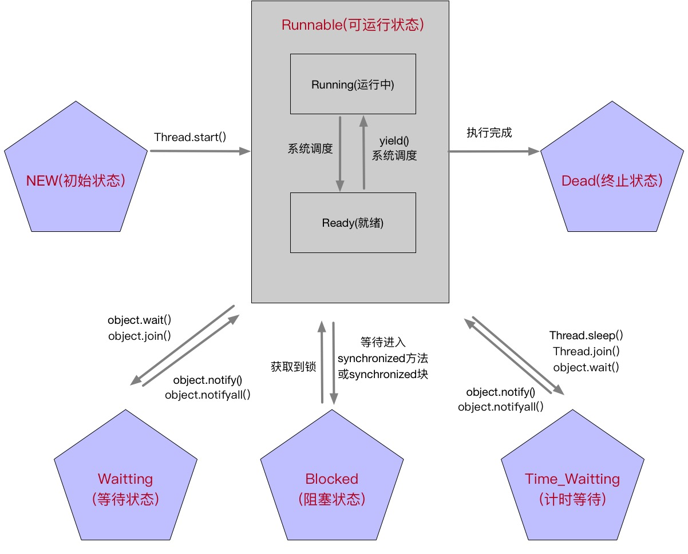

Java并发编程一之线程定义以及线程状态

系列主要回顾总结Java的并发编程，大公司的面试牢固基础知识。
进程与线程
- 进程是操作系统结构的基础，一系列数据操作的集合，系统资源分配调度的基本单位，同时 是线程的容器
- 线程是操作系统调度的最小单元，也叫轻量级进程。进程里的线程都拥有各自的计数器，局部变量和堆栈等属性，并且能够访问共享的内存变量。
线程的六个状态
- NEW(新建状态)：线程被创建，还未正式start启动
- RUNNABLE(可运行状态)：已经start启动线程，但是这个线程可能在运行也可能没在运行
- BLOCKED(阻塞状态)：线程被锁阻塞，也可以叫做被锁锁住，暂时不活动
- WAITTING(等待状态）：线程暂时不活动，并且不运行任何代码，消耗的资源最少，直到线程调度器重新激活它
- TIMED_WAITING(超时等待状态)：可以在指定时间自己返回
- DEAD(终止状态)：线程run方法执行完了或者异常退出run方法
这个状态图是自己理解的，如果有不同意的地方欢迎拍板

线程的第三种启动方式
- 继承Thread类，实现Run方法，调用线程对象的start()启动线程
- 实现Runnable接口，实现接口的Run()方法。再讲接口的实例作为参数传给Thread，最后start()启动线程
Concurrent并发包里有个Callable，实现Callable接口，重写call()方法
1
2
3
4
5
6
7
8
9
10
11
12
13
14
15
16
17public static class MyTestCallable implements Callable<String>{
public String call() throws Exception {
return "Callable HelloWord";
}
}
public static void main(String[] args){
System.out.println("Hello Start");
MyTestCallable myTestCallable = new MyTestCallable();
ExecutorService executorService = Executors.newSingleThreadExecutor();
Future mFuture = executorService.submit(myTestCallable);
try {
System.out.println("得到线程返回结果:" + mFuture.get());
}catch (Exception e){
e.printStackTrace();
}
}
Callable优点
- Callable在任务接收后有一个返回值，Runnable没有这个返回值
- call()方法会抛出异常，Runnable的run()不会抛出异常
- Future对象标识异步计算的结果，检查计算是否完成的方法。调用get()方法，会阻塞当前线程，call()方法结束后会停止阻塞。Future是来监视目标线程调用cal()方法的情况
线程的中断
线程的run()方法体执行完毕，或者抛出异常，线程就会中断。
interrupt()可以用来终止线程，当调用此方法的时候，线程的中断状态将被置位，这时每个线程都具有boolean标志，每个线程都应该随时检查这个标志，来判断线程是否被中断；但是如果线程被阻塞(sleep和wait)，就没有办法判断中断标志。会抛出InterruptException异常，
正确的线程中断：
方法1：
通过主线程休眠，感知中断，最后中断线程
1 | public static void main(String[] args) throws InterruptedException{ |
方法2：
通知主线程休眠，子线程跑起来，感知变量变化，中断线程。
1 | public static void main(String[] args) throws InterruptedException{ |